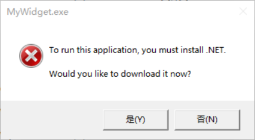
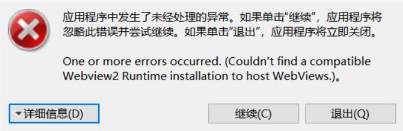

# 常见问题:
TIP
未找到解决方案/提交bug/提交建议,想法? 请前往这里 (opens new window)提交issue.
Q:如何使用?
A: 操作方法如下
- 下载压缩包并解压到任意位置 (不要放到回收站等奇怪的地方!)
- 双击 MyWidget.exe 即可.
Q:报错

A: 未安装.NET Core 5
.NET Desktop Runtime 5.0.15 The .NET Desktop Runtime enables you to run existing Windows desktop applications. This release includes the .NET Runtime; you don't need to install it separately.
| OS | Installers |
|---|---|
| Header | Arm64 (opens new window) | x64 (opens new window) | x86 (opens new window) |
Q:报错

A: 未安装WebView2,请前往 WebView2下载页面 (opens new window) 下载安装.